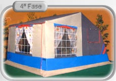

Levar a casa
para fora.
Atrelados-tenda e caravanas para descobrir. Explore a família Europa e as opções apresentadas pela Mecinor.
CampismoAtrelados-tenda, caravanas e soluções de transporte. Escolha pela utilização e descubra a Mecinor.


Modelo Europa · imagens do catálogo publicado
Conhecer a família EuropaO uso que vai dar ao equipamento é o melhor ponto de partida para conhecer a gama.
Atrelados-tenda e caravanas para descobrir. Explore a família Europa e as opções apresentadas pela Mecinor.
CampismoAtrelados para carga, motos e outras utilizações. Enquadre a necessidade com a equipa antes de escolher.
TransporteMetalúrgica Civil e Campismo. Uma empresa de Pedrouços, na Maia, dedicada ao fabrico, venda e assistência de equipamentos para transporte e campismo.
Atrelados-tenda, atrelados de carga e caravanas fazem parte da oferta apresentada pela empresa.
Conhecer e contactar